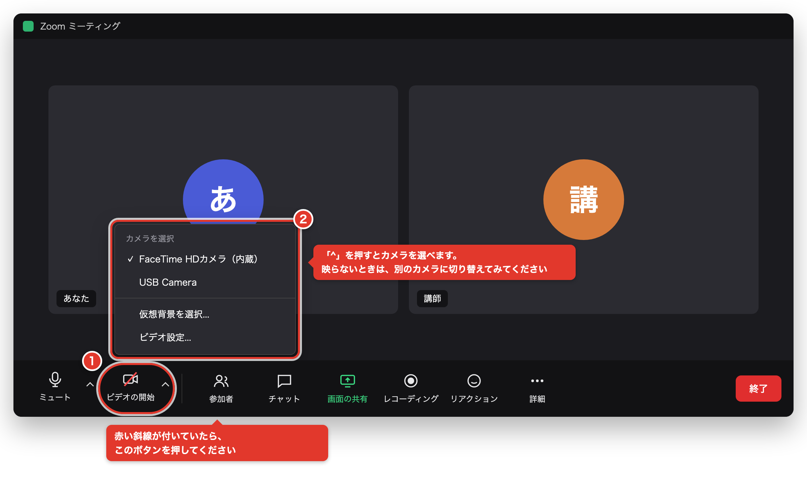
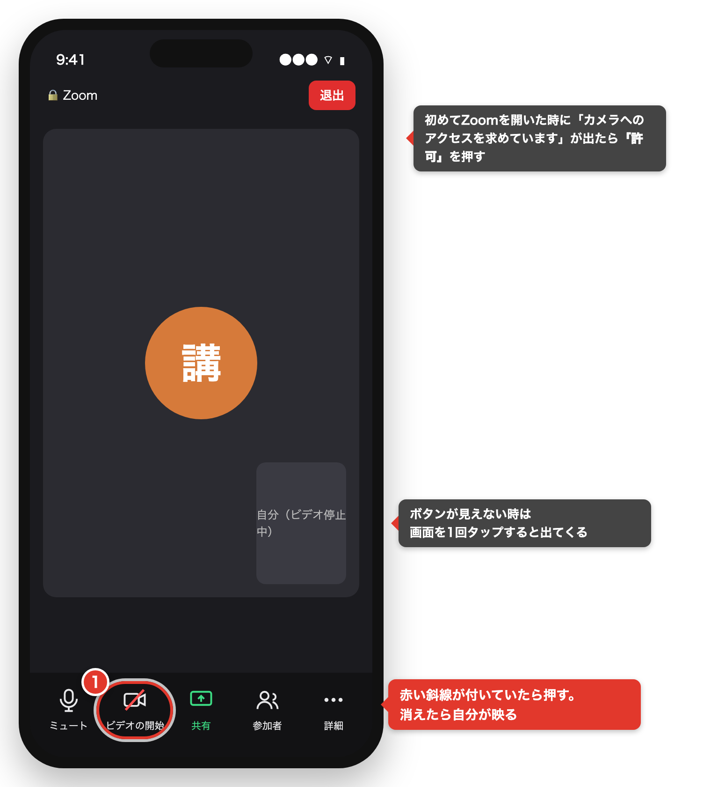
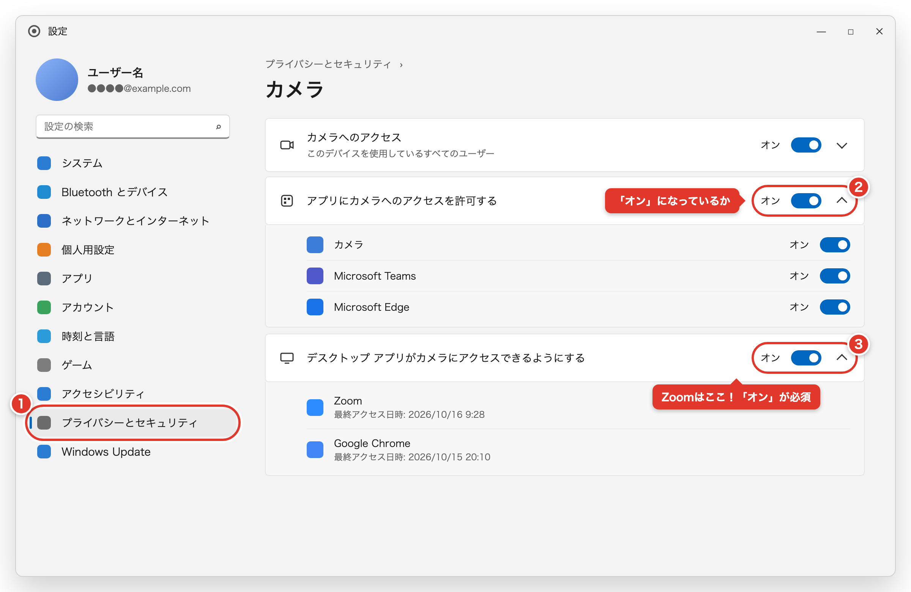
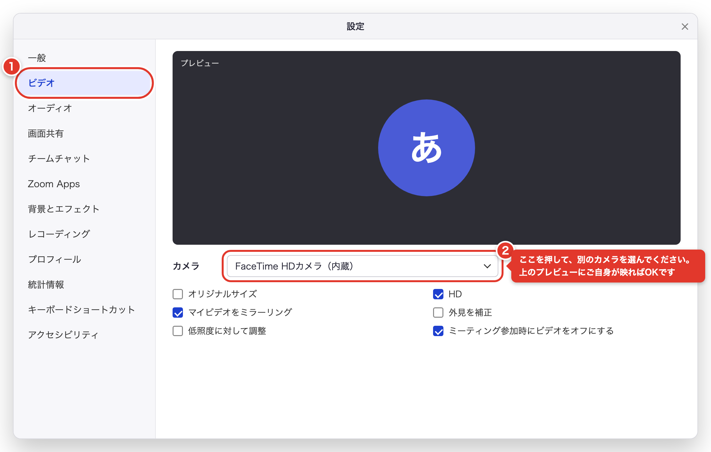
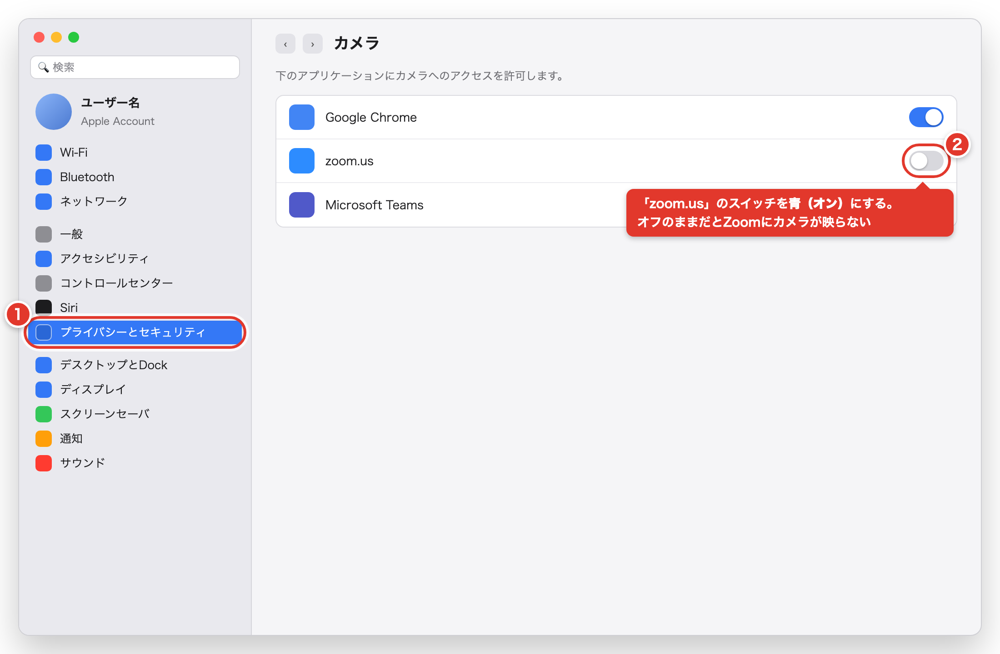
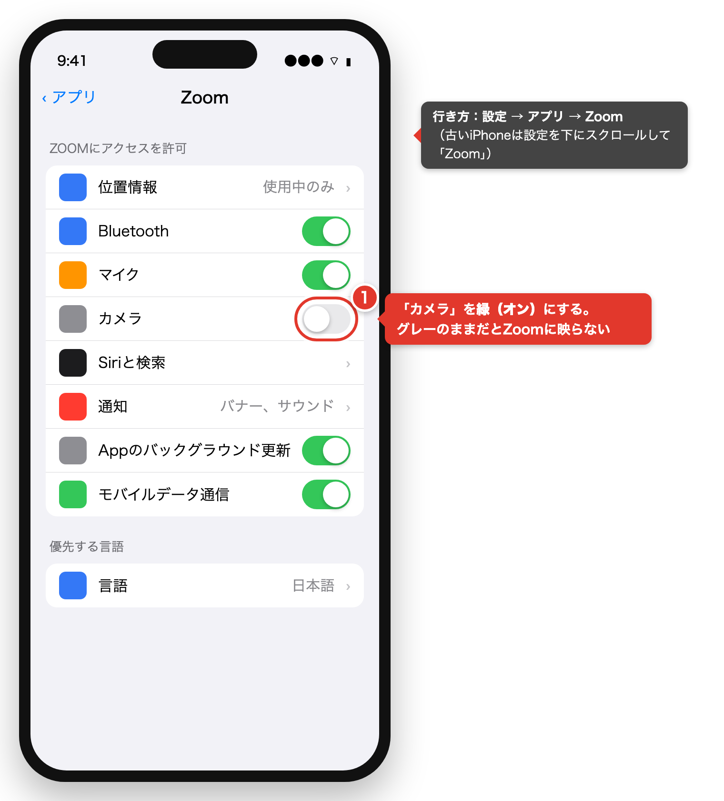
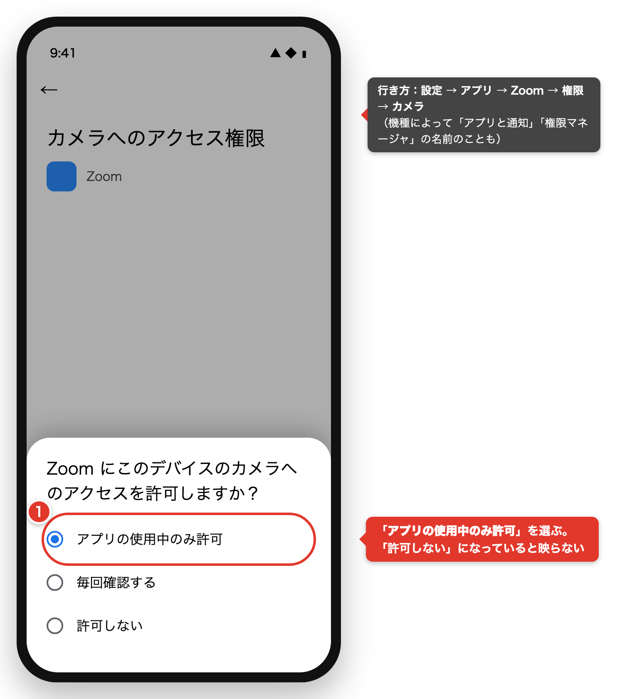
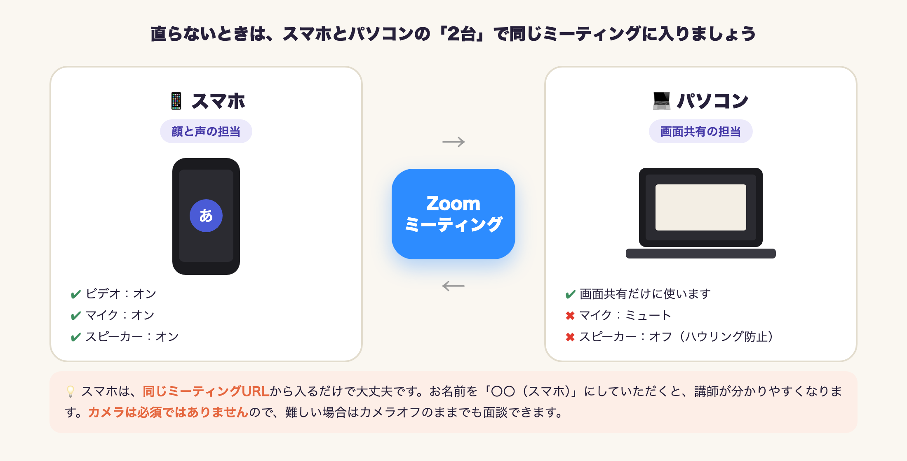

01
まずはこちらをお試しください（どの機器でも共通・約30秒）
- 1画面の下にある 「ビデオの開始」 ボタンをご覧ください。カメラのマークに赤い斜線が付いていたら、そのボタンを押してください。斜線が消えて「ビデオの停止」という表示に変われば、映っています。
- 2それでも映らない場合は、ビデオボタンの横にある 「^」 を押して、別のカメラ を選んでみてください。こちらはパソコンの方向けです。スマホの方は次の③へお進みください。
- 3カメラを使っている他のアプリ（LINE・Teams・カメラアプリ・ブラウザのタブなど）があれば、すべて閉じてください。カメラは、同時に1つのアプリでしか使えません。
- 4Zoomを一度完全に閉じて、もう一度ミーティングのURLから入り直してみましょう。


ここで直った方は、これで完了です！ 直らなかった方は、下の「②」でお使いの機器を選んでください。
02
それでも映らないときは、お使いの機器を選んでください
ほとんどの原因は「パソコン（またはスマホ）が、Zoomにカメラを使わせていない」という設定です。機器によって設定の場所が違いますので、お使いのものを選んでください。
WINDOWS 11 / 10 をお使いの方
- 1スタート → 設定 → プライバシーとセキュリティ → カメラ の順に開いてください。Windows 10 の場合は「プライバシー → カメラ」です。
- 2次の3つがすべて 「オン」 になっているか確認しましょう。「カメラへのアクセス」／「アプリにカメラへのアクセスを許可する」／「デスクトップ アプリがカメラにアクセスできるようにする」
- 3いちばん下の 「デスクトップ アプリ…」が特に大切です。Zoomはこちらに含まれます。オフになっていたらオンにして、Zoomを開き直してください。

- 4Zoomの 設定 → ビデオ を開き、「カメラ」の欄で別のカメラを選んでみてください。上のプレビューにご自身が映ればOKです。Zoomのバージョンによっては「ビデオとエフェクト」という名前になっています。

- 5それでも映らない場合は、カメラの物理スイッチを確認してみましょう。キーボードのカメラキー（Fn＋F○）／本体側面のスライドスイッチ／レンズのカバー（シャッター）が閉まっていると映りません。
- 6Windows標準の 「カメラ」アプリ（スタートメニューで「カメラ」と検索）を開いて、ご自身が映るか試してみてください。こちらでも映らない場合はパソコン側（ドライバーや故障）の可能性があります。映る場合は、Zoomを入れ直すと直ることが多いです。
MAC をお使いの方
- 1画面左上の りんごマーク → システム設定 → プライバシーとセキュリティ → カメラ の順に開いてください。
- 2「zoom.us」のスイッチを青（オン） にしてください。
- 3Zoomを一度終了して、開き直してください。オンにしただけでは反映されませんので、開き直しが必要です。

- 4Zoomの 設定 → ビデオ を開き、「カメラ」の欄を確認してください。別のカメラがあれば選んでみましょう。
- 5それでも映らない場合は、FaceTime アプリを開いて、ご自身が映るか試してみてください。FaceTimeでも映らない場合はMac側の問題の可能性があります。映る場合は、Zoomを入れ直してみてください。
初めてZoomを使うときに「“zoom.us”がカメラへのアクセスを求めています」と表示されたら、「OK（許可）」 を押してください。「許可しない」を押してしまった場合も、上の手順で直せます。
IPHONE / IPAD をお使いの方
- 1設定 → アプリ → Zoom の順に開いてください。古いiPhoneの場合は、「設定」を下にスクロールすると「Zoom」があります。
- 2「カメラ」を緑（オン） にしてください。
- 3Zoomアプリを一度閉じて（画面の下から上にスワイプして消して）、開き直してください。

ご参考：会議中に「ビデオの開始」を押しても反応しないときは、この設定がオフになっていることがほとんどです。
ANDROID をお使いの方
- 1設定 → アプリ → Zoom → 権限 → カメラ の順に開いてください。機種によって「アプリと通知」「権限マネージャ」という名前になっていることもあります。
- 2「アプリの使用中のみ許可」 を選んでください。「許可しない」のままだと映りません。
- 3Zoomアプリを一度閉じて、開き直してください。

見つからないときは、設定アプリの上にある検索窓に「権限」や「Zoom」と入力すると出てきます。
03
パソコンにカメラが無い場合は、スマホと2台で入りましょう
デスクトップパソコンや古いノートパソコンには、そもそもカメラが付いていないことがあります。その場合はカメラを買わなくても大丈夫です。スマホとパソコンの両方で同じミーティングに入れば、顔と画面の両方を見せられます。

- 1いつも通り、パソコンでZoomに入ってください。
- 2スマホでも、同じミーティングのURL（LINEに届いているリンク）から入ってください。お名前を「○○（スマホ）」にしていただくと、講師が分かりやすくなります。
- 3パソコン側はマイクをミュートにして、スピーカーはオフにしてください。Zoomに入るときに「コンピューターオーディオに参加」を押さないか、入ったあとなら「ミュート」横の「^」→「コンピューターオーディオから退出」を選びます。音が二重になったり、キーンと鳴ったり（ハウリング）するのを防げます。
- 4画面を見せたいときは、パソコンの「画面の共有」 をお使いください。お顔と声はスマホから届きます。
カメラは必須ではありません。 2台で入るのが難しければ、カメラをオフにしたまま面談していただいて大丈夫です。講師にその旨をお伝えください。
05
講師の方へ：面談中の確認の順番と、お送りする文面
🗣 確認の順番（この順番なら5分以内に切り分けられます）
- 「今は、パソコンとスマホのどちらでご参加ですか？」（Windows／Mac／iPhone／Androidまで伺ってください）
- 「画面の下のビデオのボタンに、赤い斜線は付いていますか？」 → 付いていれば、押していただきます（①）
- パソコンの方には 「ビデオボタンの横の「^」を押すと、カメラの名前は出ますか？」 → 出ない＝パソコンがカメラを認識していません（②へ）／出る＝別のカメラを選んでいただきます
- 機種別のページをお送りして、一緒に設定を確認します（下の文面をお使いください）
- 5分で直らない場合は、カメラオフのまま面談を進めてください（パソコンにカメラが無い方には、③の2台方式を次回までにご案内ください）
前回スマホで参加されていた方は、パソコンにカメラが無い可能性が高いです。「前回はスマホからでしたよね？」と伺うと早く切り分けられます。
💬 受講生の方にお送りする文面（コピーしてお使いください）
カメラが映らないときの直し方をまとめたページです👇
https://ryoya9595.github.io/rise-guide/zoom-camera/
上から順番に試してみてください！
直らなくても、カメラオフのまま面談はできますので大丈夫ですよ🙆♀️
機種が分かっている場合は、URLの後ろに次の文字を付けると、その機種のタブが開いた状態で届きます。
- Windows：
…/zoom-camera/#win - Mac：
…/zoom-camera/#mac - iPhone：
…/zoom-camera/#iphone - Android：
…/zoom-camera/#android